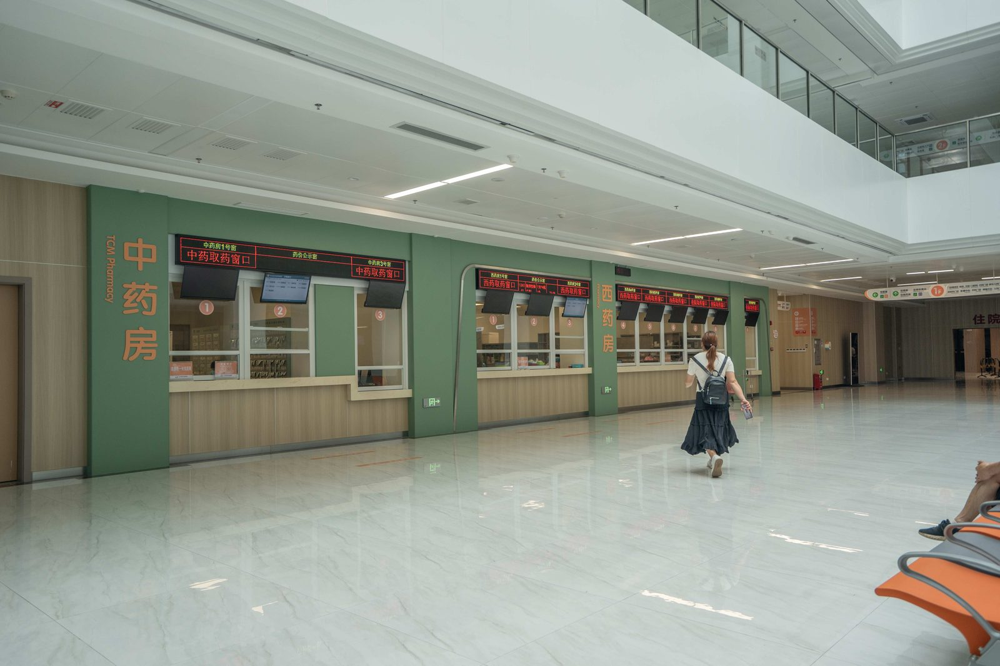

SEO Article
医院养老家具为什么更重视环保、耐用和安全？
医养空间家具面对的是高频公共使用和特殊人群，不能简单套用普通办公家具标准。
医养家具要从真实使用场景出发
医院和养老机构的公共等候区、诊疗办公区、会议室和休息空间，对家具的环保、安全、边角、清洁维护和长期耐用性都有更高要求。
对于医养项目客户，选择家具供应商时要看产品体系、材料稳定性、检测能力和工程交付经验。

SEO Article
医养空间家具面对的是高频公共使用和特殊人群，不能简单套用普通办公家具标准。
医院和养老机构的公共等候区、诊疗办公区、会议室和休息空间，对家具的环保、安全、边角、清洁维护和长期耐用性都有更高要求。
对于医养项目客户，选择家具供应商时要看产品体系、材料稳定性、检测能力和工程交付经验。
